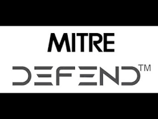

Defense Matrix
MITRE DEFEND Integration Framework
Select an item to view details
Click on any defense technique in the matrix above to view detailed information about its implementation, purpose, and MITRE DEFEND reference.

MITRE DEFEND Integration Framework